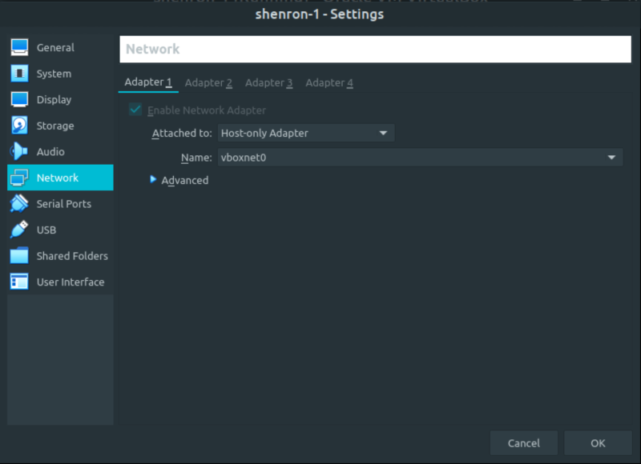

Shenron 1
▸ Shenron 1
▸ 1. Scan Network
▸ 2. Finding Services and Ports
▸ 3. Enumerate
▸ 3.1 Webserver with Gobuster
▸ 4. Exploitation
▸ 4.1 Log in Joomla
▸ 4.2 Inject Web Shell
▸ 4.3 MySql credentials
▸ 4.4 Switch user
▸ 4.5 Connect via SSH
▸ 4.6 Switch to shenron user (Catch the 1st flag)
▸ 5. Privilege Escalation
▸ 5.1 Linpeas.sh
▸ 5.2 Look for user's privileges (2nd flag)
Difficulty: Medium.
Flag: 2 flags.
Learning:
• Reconnaissance
Scan Network
Find services
• Enumerate
Webserver with gobuster
• Exploitation
Log in joomla
Inject Web Shell
Look for MySql credentials
Switch user
Connect via SSH via “id_rsa”
Switch user via “id_rsa”
• Privilege Escalation
Search for possible paths to escalate privileges (linpeas)
Look for users privileges (apt)
• Download (Mirror): https://download.vulnhub.com/shenron/shenron-1.ova
• Download (Torrent): https://download.vulnhub.com/shenron/shenron-1.ova.torrent
Install the machine on VirtualBox:
1. Download the file.
2. On Virtualbox choose File->Import Appliance.
3. Select the file “ova”.
4. Accept to import.


Watch your Machine IP.
$ ifconfig
Output:

Diagram